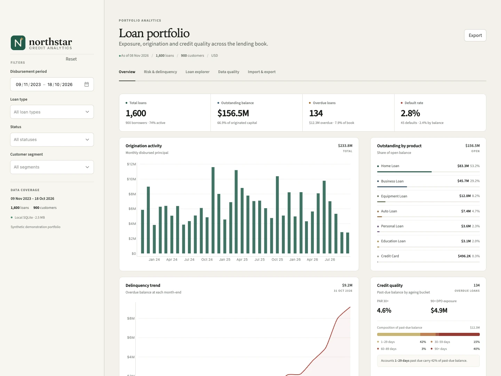
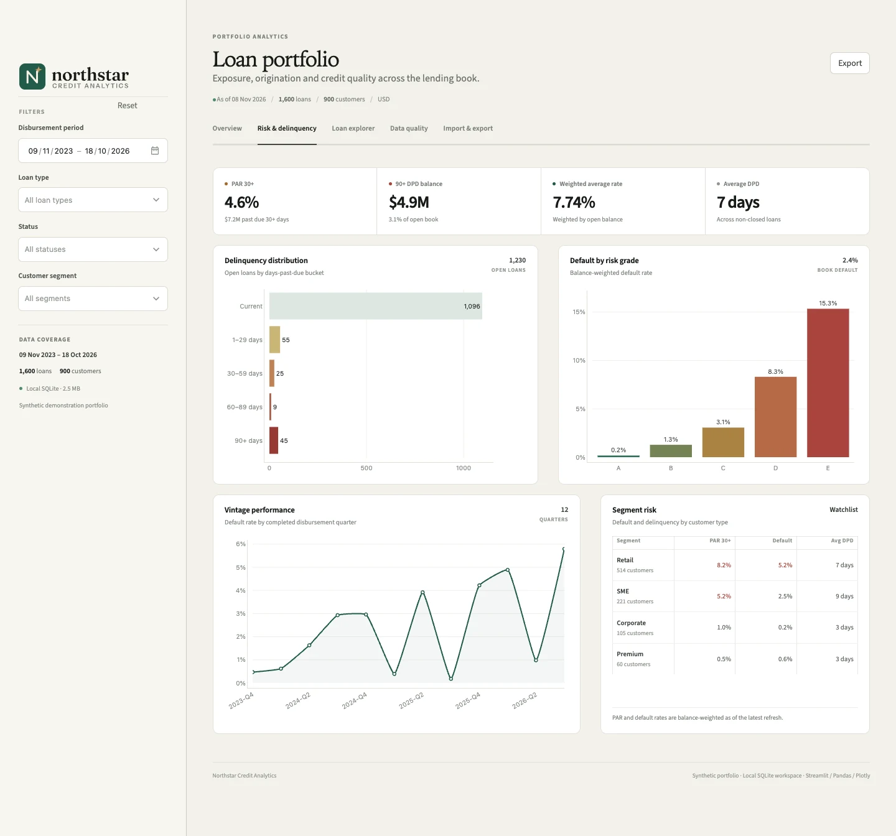
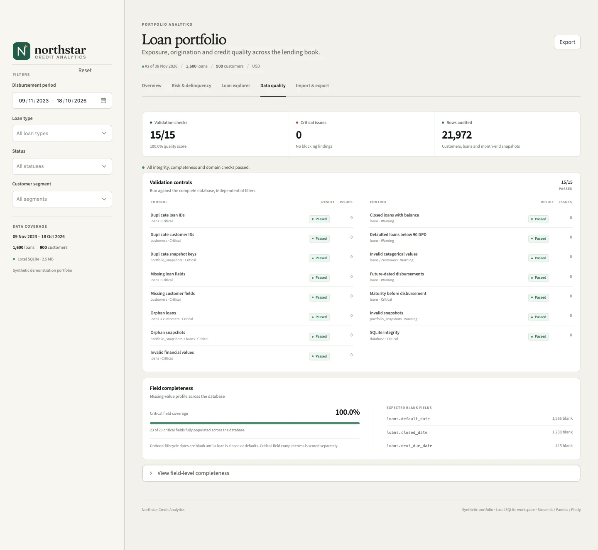

01
Exposure
See the shape of the book.
Outstanding mix, origination pace and borrower concentration sit together. Compare products, segments and counterparties without losing the whole-book context.
Loan portfolio analytics
Exposure, delinquency and credit quality in one calm, local workspace — with documented metrics and visible data checks.
PythonStreamlitPandasPlotlySQLite

01 / Workspace
Start with the whole portfolio, then move down to the loans that need attention. Every view shares the same filters and the same SQL definitions.
Outstanding mix, origination pace and borrower concentration sit together. Compare products, segments and counterparties without losing the whole-book context.
Read arrears by ageing bucket, grade and completed vintage. PAR metrics keep their denominator in view, so a change in risk is not confused with a change in mix.
Duplicates, orphan records, missing fields and impossible values are surfaced before the portfolio numbers reach a committee.
02 / Risk & delinquency
Distinguish early arrears from late-stage exposure. Northstar brings the distribution, severity and cohort view together without flattening them into a single score.


03 / Data quality
Fifteen controls run against the complete database, independent of the dashboard filters. The validation list and field completeness profile sit beside the portfolio so the quality of the underlying record is never assumed.
04 / Under the hood
A Streamlit interface, a filter-aware SQL layer and one SQLite file. The data path stays visible, the metric definitions stay legible and the demo has no hidden services.
Every view starts with a parameterized query over a joined loan view.
Pandas shapes result sets; Plotly and a small custom CSS system present them.
One SQLite database holds loans, customers and month-end snapshots.
-- current exposure by product
SELECT
d.loan_type,
SUM(d.outstanding_balance) AS outstanding
FROM loan_details AS d
WHERE d.status != 'Closed'
GROUP BY d.loan_type
ORDER BY outstanding DESC;Run locally
No API keys. No external warehouse. Generate the seeded portfolio, start the app and open a complete lending analytics workspace on your machine.
Python 3.11+ · macOS / Linux commands · Windows activation is in the README.
git clone https://github.com/Mo-Shakib/Northstar.git
cd Northstar
python3 -m venv .venv
source .venv/bin/activate
pip install -r requirements.txt
python init_db.py
streamlit run app.py